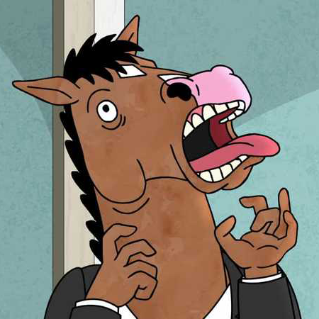

About
Free Churro is an (estimated) 100 day type project by me, Emily Zhong, with hopes that it'll diversify my arsenal of typography in my everyday designs.
The text is from the eulogy in season 5, episode 6 of Bojack Horseman, Free Churro. You can view the whole script here.
